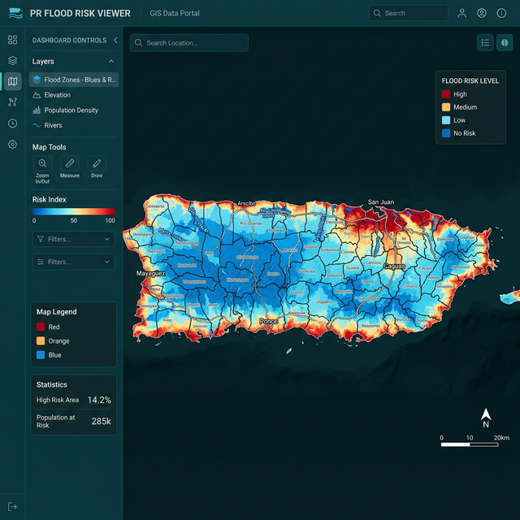
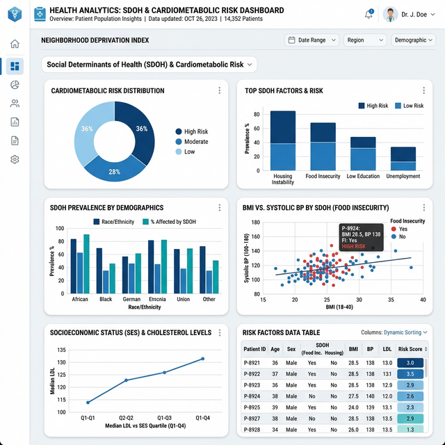
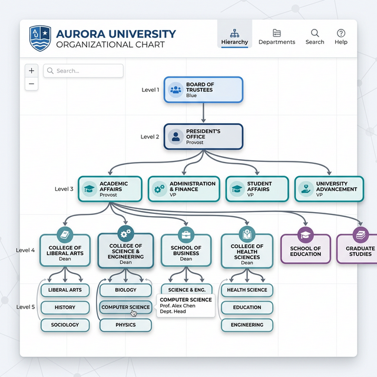
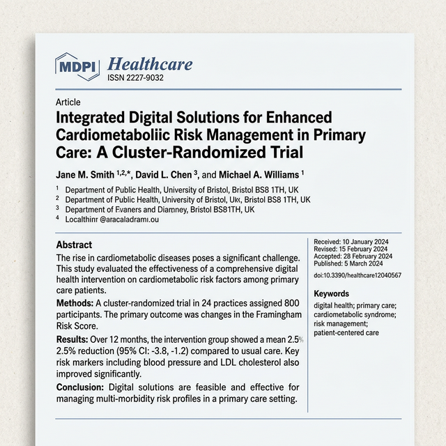

From mapping flood risk across Puerto Rico to self-hosting AI search engines on a Raspberry Pi — a collection of projects spanning data science, web development, and infrastructure.

GIS & Data VizInteractive choropleth visualization mapping flooding risk across municipalities in Puerto Rico. Built to communicate environmental vulnerability through clear, accessible data storytelling.

ResearchAnalytics dashboard presenting research findings on social determinants of health and their relationship to cardiometabolic risk factors across populations.

Web AppInteractive organizational chart for the University of Puerto Rico Medical Sciences Campus. Features collapsible hierarchy, zoom, pan, and infinite canvas navigation.
Designed and developed a personal portfolio website. Clean, elegant layout with responsive gallery and modern aesthetic tailored to the client's brand.
Self-hosted infrastructure running on Raspberry Pi — including a Dokploy instance for deploying websites, a SearXNG private search engine integrated with AI for web-augmented search capabilities.

PublicationPeer-reviewed publication in the MDPI Healthcare journal, contributing research findings at the intersection of biomedical informatics and cardiometabolic health outcomes.